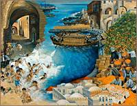
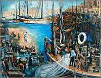
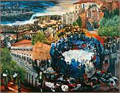
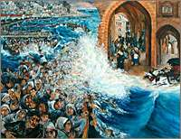
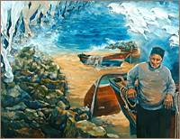
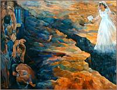
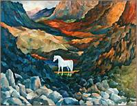
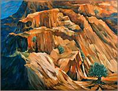

|
|
 اللوحة: زيتية، إنتاج عام 1997، 165X200 سم |
 اللوحة: زيتية، إنتاج عام 1997، 165X200 سم |
 اللوحة: زيتية، إنتاج عام 1998، 165X200 سم |
 اللوحة: زيتية، إنتاج عام 1998، 165X200 سم |
 اللوحة: زيتية، إنتاج عام 1999، 165X200 سم |
 اللوحة: زيتية، إنتاج عام 1999، 165X200 سم |
 اللوحة: زيتية، إنتاج عام 2000، 165X200 سم |
 اللوحة: زيتية، إنتاج عام 2000، 165X200 سم |
|
يـافـا، عروس البحر، من أقدم مدن المتوسط وأجملها. سمّاها الكنعانيون "يـافي" بمعنى الجميلة. في موسم البرتقال كنت أذوب طرباً بلونيه البرتقالي والأخضر . |
يقع بيتنا في البلدة القديمة ليافا، شبابيكه تطل على بحرها الأزرق وعلى مينائها. الدائم الحركة، فالسفن والمراكب والقوارب تتداخل صواريها وحبالها لتشكـّل مع بيوت البلدة القديمة لوحة فسيفساء جميلة. |
كنتيجة
للتحالف الاستعماري البريطاني
والصهيوني والتي كانت فلسطين وشعبها
ضحيته، تدفقت الهجرات اليهودية إلى
فلسطين،
وقـُـمعت كل الثورات
. وقامت دولة "إسرائيل"
العنصرية على أنقاض فلسطين. |
فجر الثامن والعشرين من نيسان 1948 ، اقتحمت العصابات الصهيونية أحياء يـافـا لإرغام أهلها، بقوةالسلاح على المغادرة . آلاف اليافيين تجمعوا عند الميناء، هلعين مرعوبين، ليركبوا البحر . |
البحر كريمٌ معطاء إلاّ عندما يـفرض العدوّ المحتلّ قوانينه الجائرة، والتي من شأنها حرمان الصيّادين من حرية الإبحار والبحث عن الرزق الحلال. لكن الفارس لا ريب آت، من البرّ، من البحر ... هو آتٍ لا محالة. |
فرض العدوّ الإسرائيلي في كثير من المناطق التي احتلها الفصل بين سكان القرية أو المدينة ، فانشطر الشعب وقسّمت العائلة، وأحياناً تحرم العروس من لقاء عريسها. والمعتقلون في السجون يقاسون التعذيب . |
الحصان العربي الأصيل ، رمز الأصـالـة والـعـنـفـوان العربيّ. محاصرٌ في كل مكان ، مـقـيّـدٌ بالعوائق والحواجز التي تحول بينه وبين قدراته على العطاء، لتحقيق الأماني والآمال |
على
جبال فلسطين تتربع شجرة الزيتون المباركة، والخضراء دائماً، متشـبـثـةً بالحياة ومتحديةً هذه الصخور الصمّاء وقساوتها، لتقول أن الحياة أقوى، كتمسك أهلنا
بحقهم في الحياة رغم جبروت الطغاة.
|